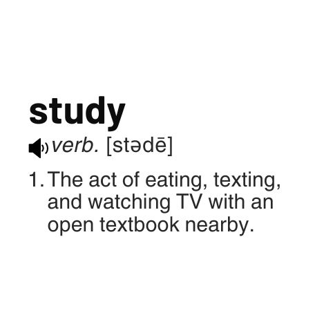

Profilo studente
 Gli incontri sono individuali e stilati su misura di volta in volta in base agli oggetti di studio combinati con le aree di interesse di ogni singolo ragazzo/a. Che si tratti di compiti e l'approfondimento del programma scolastico o semplicemente l'esercizio dello studio fatto, ad ogni studente e' riservato il materiale creato su misura. Il questionario contiene domande sugli interessi ludici del ragazzo/a da integrare nel insegnamento della lingua inglese. Utilizza il form sottostante per permettermi di addattare gli incontri alla personalita' dello studente interessato.